Desktop App
Native application for Windows, macOS, and Linux

A Modern BitTorrent Client Written in Rust
Fast, lightweight, and built for self-hosters. Benchmarked at up to 15x faster than qBittorrent with throughput exceeding 16 Gbps. Desktop app, clean web UI, full HTTP API, and runs anywhere Docker does.
Built for performance and simplicity
Up to 15x faster than qBittorrent in benchmarks. Peaks at 16+ Gbps throughput with async I/O powered by Tokio and efficient multi-core utilization.
Clean, responsive React + TypeScript interface. Manage torrents from any browser — desktop or mobile. Dark mode included.
Full REST API with Swagger documentation. Add torrents, check status, stream files, and manage everything programmatically.
Full DHT support (BEP-5), HTTP and UDP trackers, peer exchange, and UPnP port forwarding for maximum connectivity.
Add torrents via magnet links or .torrent files. Metadata is resolved automatically from the swarm when using magnets.
Native desktop application for Windows, macOS, and Linux powered by Tauri. System tray integration, lightweight, and auto-updates.
Official multi-stage Docker image. Minimal scratch-based container with only the binary. One command to deploy.
Browse and search the Indexarr torrent index directly from the web UI. Search, preview, and download — all without leaving rustTorrent.
Stream media files directly from incomplete torrents via the HTTP API. Perfect for watching videos while they download.
Rust's ownership model ensures no buffer overflows, data races, or use-after-free bugs. Safe by default.
A modular Rust workspace with clean separation of concerns
Benchmarked head-to-head against qBittorrent across six real-world scenarios
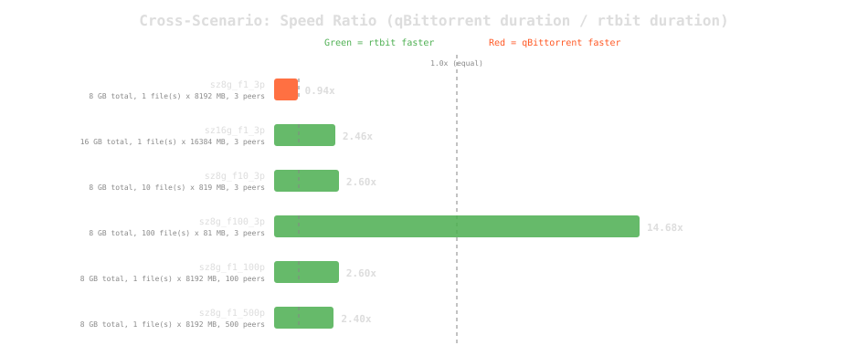
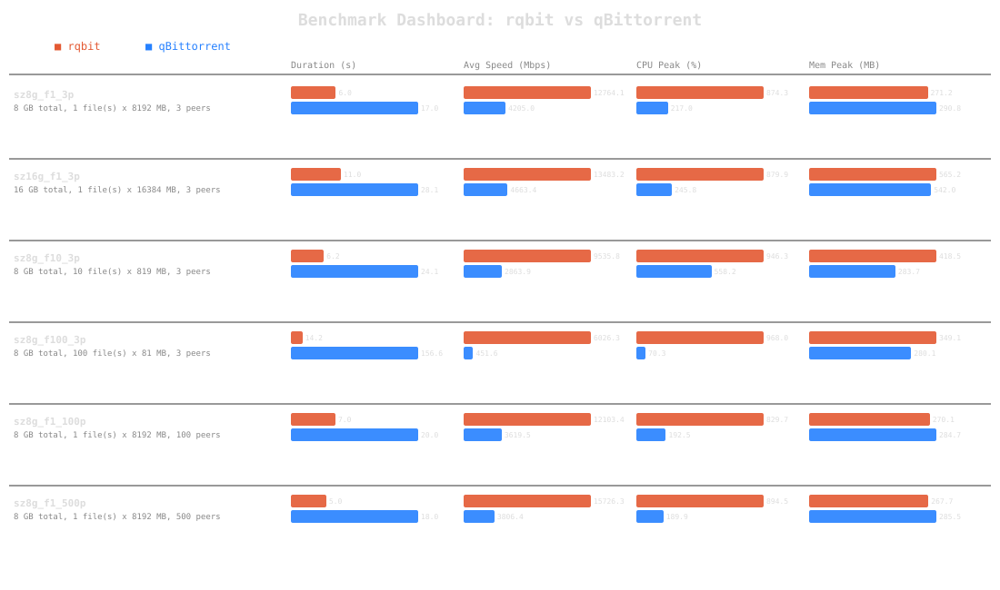
Click a scenario to see the full comparison and time-series data
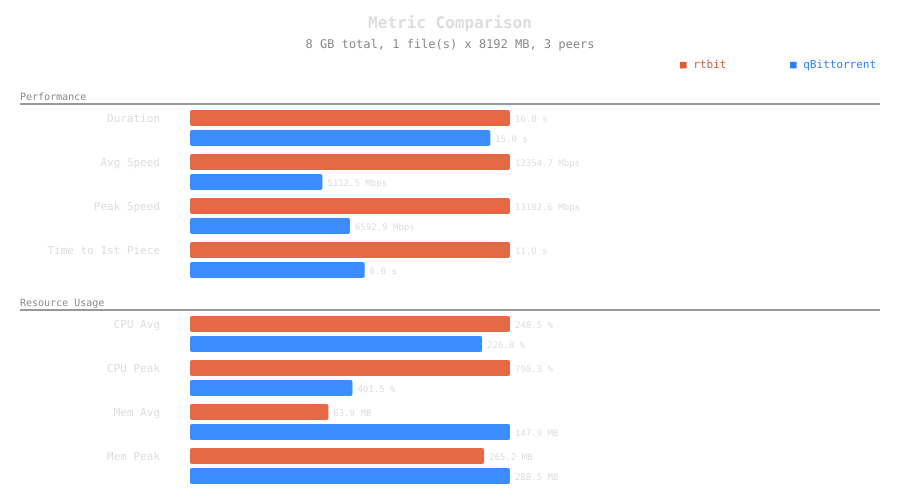
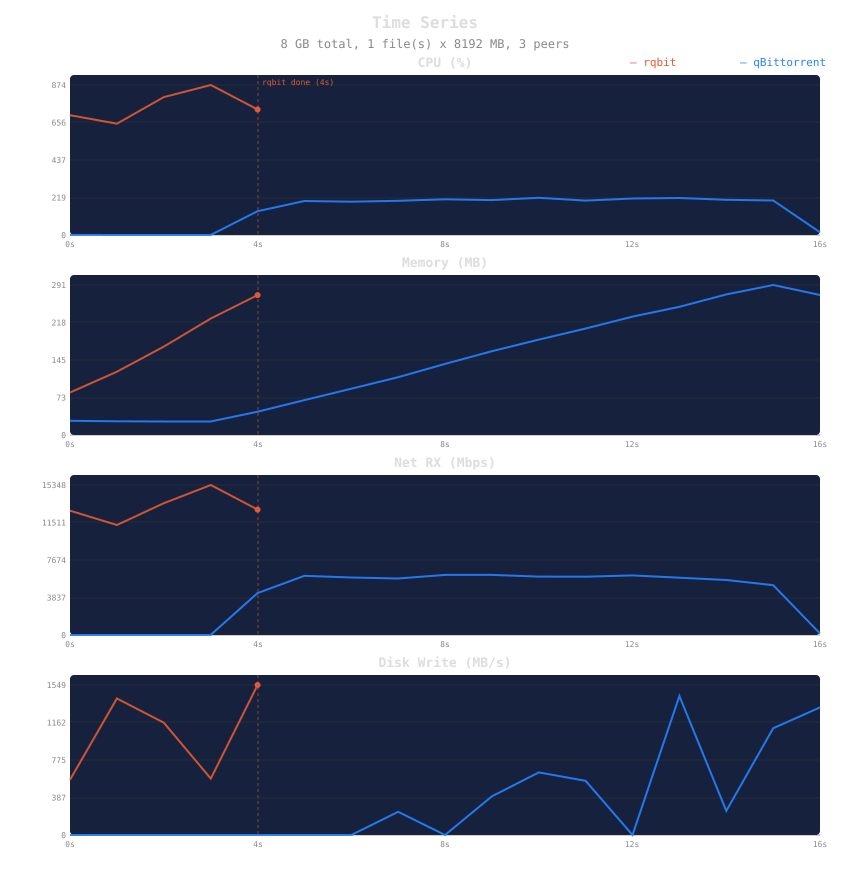
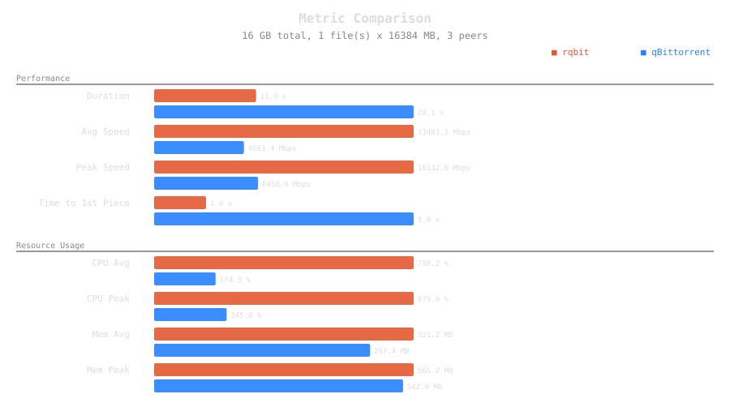
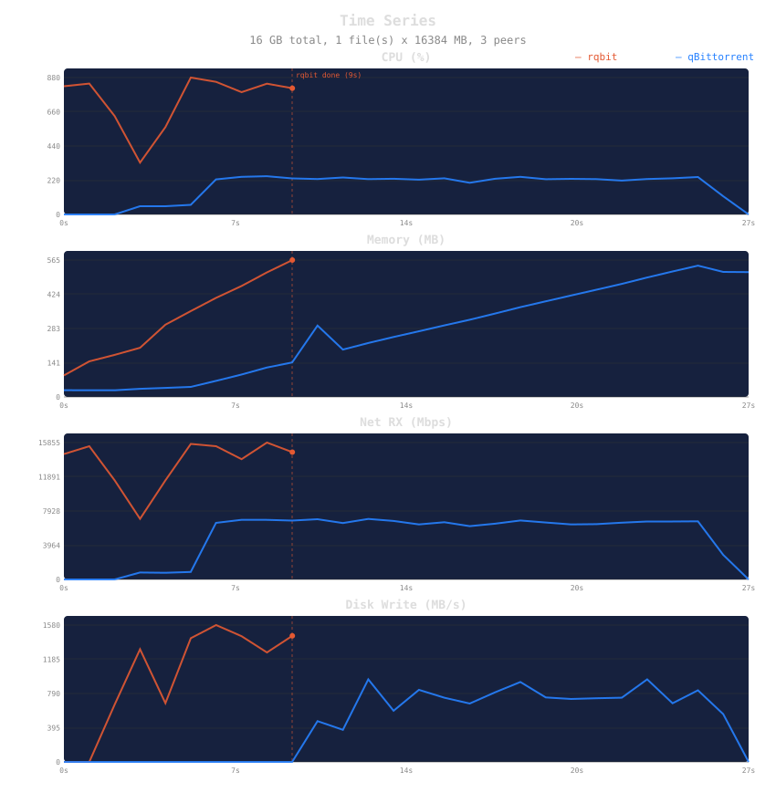
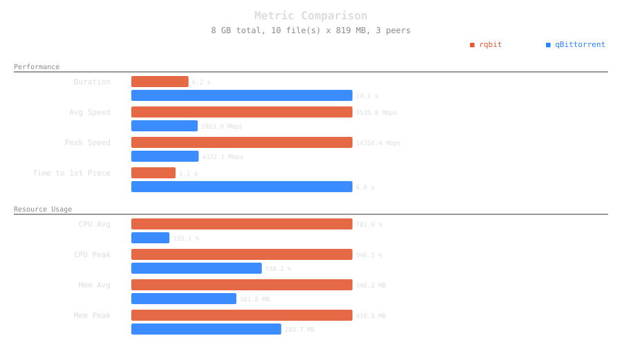
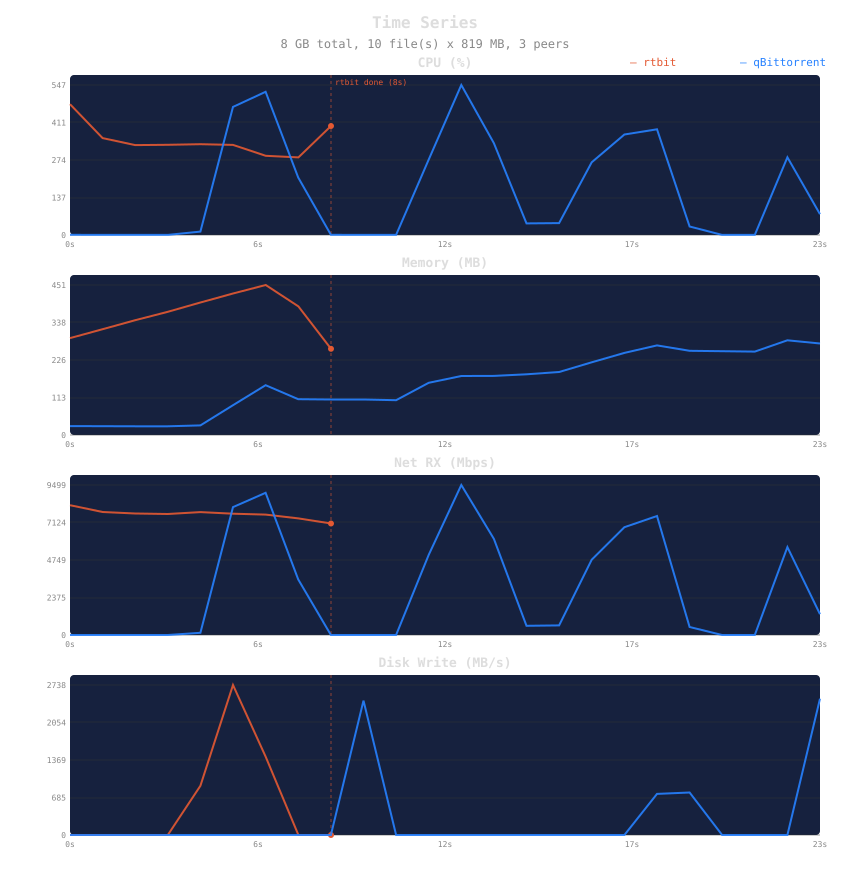
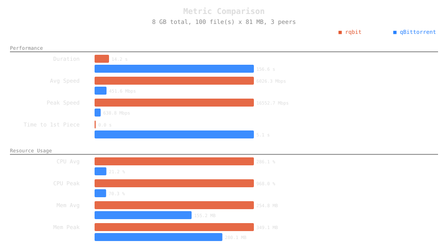
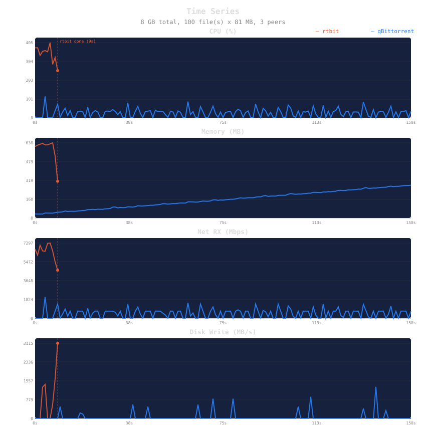
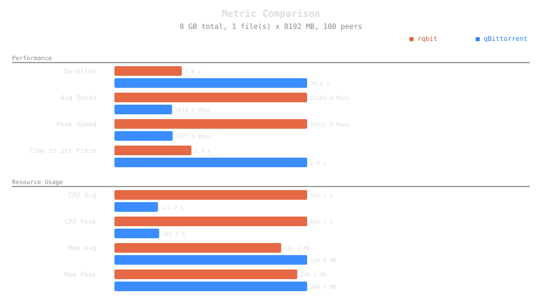
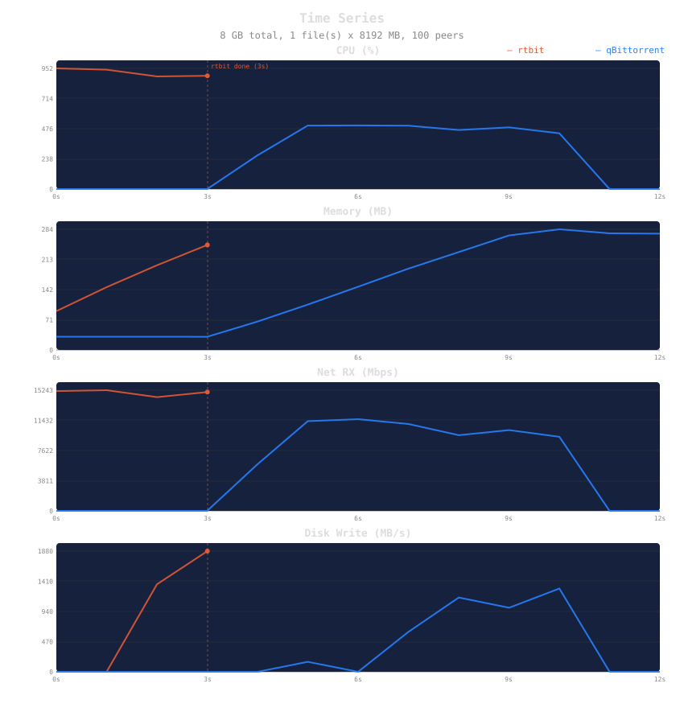
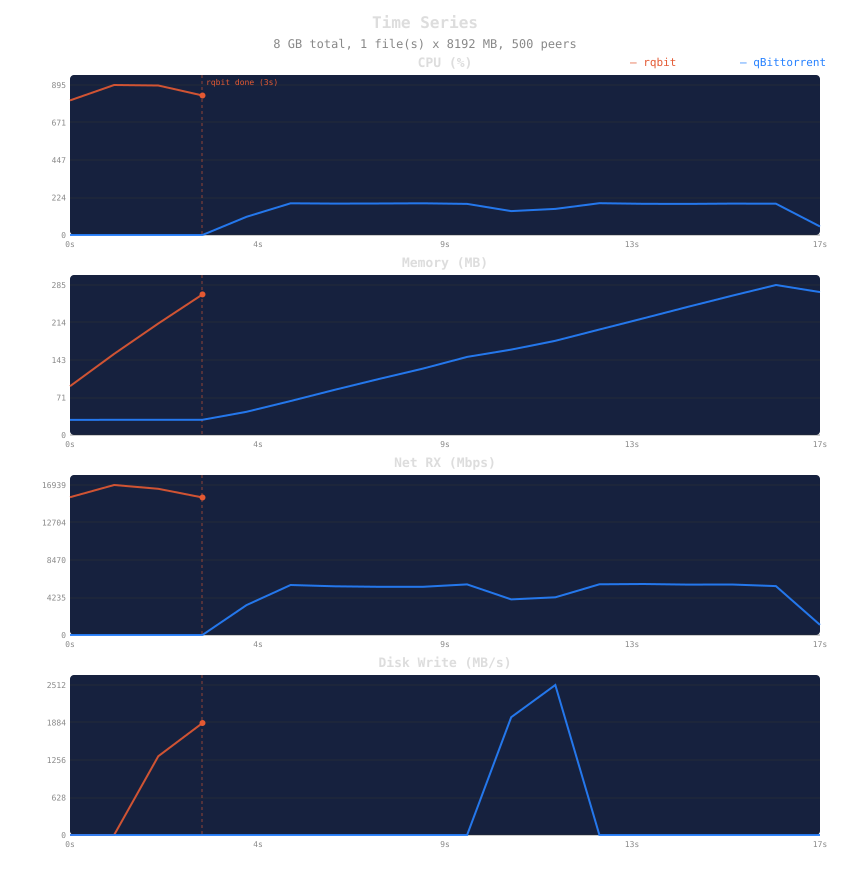
All benchmarks run in Docker containers on identical hardware with direct peer-to-peer transfers. Metrics collected via Docker stats API. Full methodology and scripts available on GitHub.
Interactive demo with simulated torrent data
| Name | Size | Progress | Speed | Status |
|---|---|---|---|---|
| project-alpha-v2.3.iso | 4.2 GB | 73% |
12.4 MB/s | Downloading |
| open-dataset-2024-q3.tar.gz | 18.7 GB | 31% |
8.1 MB/s | Downloading |
| creative-commons-music-pack | 892 MB | 100% |
2.3 MB/s | Seeding |
| firmware-update-bundle-v8.1 | 1.1 GB | 56% |
— | Paused |
Native application for Windows, macOS, and Linux
Browse the community torrent index without leaving rustTorrent
Search the full Indexarr torrent index directly from the rustTorrent web UI. Filter by category, browse recent uploads, and find content across the decentralized network.
Click any result to resolve metadata, select files, and start downloading — all within the same interface. No copy-pasting magnet links.
Point rustTorrent at your Indexarr instance with three environment variables. The integration proxies all requests server-side — your API key never reaches the browser.
| Name | Category | Size | |
|---|---|---|---|
| Big.Buck.Bunny.2008.4K.BluRay | Movie | 8.1 GB | Download |
| Sintel.2010.1080p.Surround | Movie | 4.3 GB | Download |
| Tears.of.Steel.2012.4K | Movie | 6.7 GB | Download |
Ports: 3030 (Web UI + API), 4240 (BitTorrent TCP + uTP)
Downloads: Configure the download directory in docker-compose.yml
System tray: rustTorrent runs in the system tray with speed indicators
Web UI: The desktop app opens the same React web UI at localhost:3030
Requirements: Rust 1.75+ and npm (for webui feature)
Note: Building from source compiles the web UI into the binary
rustTorrent is a fork of rqbit, originally created by Igor Katson. The original project is licensed under the Apache License 2.0.
We are grateful for Igor's work in building a high-quality BitTorrent client in Rust. rustTorrent builds upon that foundation with additional features and modifications.